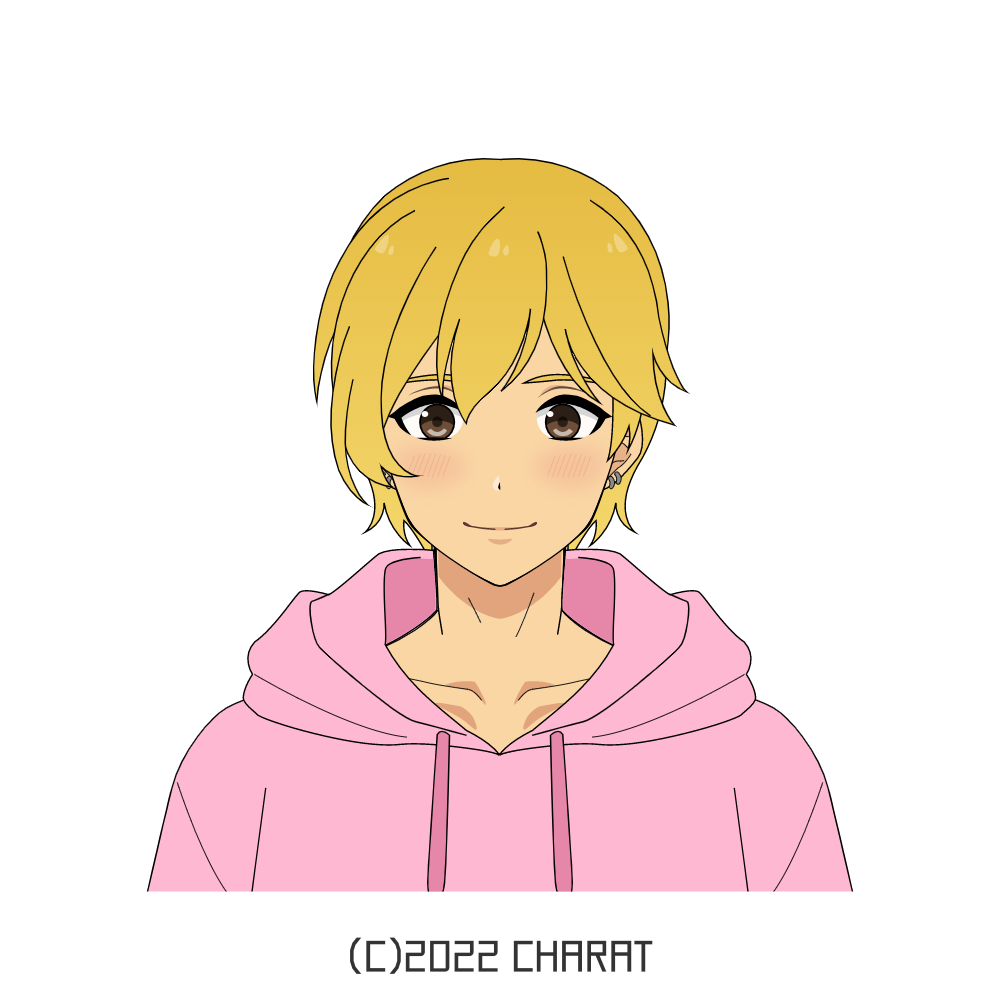

竜駕 輝義 - Ryuugamine Kiyoshi
Personality
Living in a foreign country, he's cautious with his words and actions, unsure where he's allowed to tread. He develops a habit to tense up in social situations so he gives the impression to always be on edge. When he's comfortable though, like with his roommate, his speech is slow, usually mixing some Japanese. Nevertheless, he's diligent and hard-working in his studies and duties.
Skills & Hobbies
- Cooking; In a single-parent household, Kiyoshi learned how to cook from a young age. His mom had silent hopes he would enter the food industry and bring him to the hotel she works at. Away from his mother, Kiyoshi's passion for cooking continues to grow. He finds joy in seeing people share the food he makes and having a good time.
- Body kinesthetic; Kiyoshi has good body coordination.
- Reading; When idle, he spends his time reading fanfiction or webtoons online. His favorite genre is Boy's Love or MLM romance. He owns some BL manga volumes in English, including gifts from his boyfriend. He's into stories that feature age gap pairings.
- Writing; Kiyoshi has developed a journaling habit: After waking up, he sits on the apartment's balcony and journals everything on his mind before starting the day. He has been writing NSFW content since middle school and his safe space is boyxboy/MLM romance stories.
- Trying out new recipes; Kiyoshi uses holidays and events to make something new or improve his skills. Sometimes, he records himself cooking and uploads it on the internet.
Friends and Family
- Kiyoshi is in a romantic/sexual relationship with Kirishima Keima, his best friend. They have been dating since their 2nd year in middle school. They know each other deeply and learned to establish boundaries and limits to what they shouldn't say, finding common ground to discuss constructively.
- Back in his first year, Kiyoshi roomed with a one year older transguy named Lian Yu. Lian made an effort to understand him, and Kiyoshi got used to the language. Kiyoshi trusts him deeply, asking for advice and confiding in him.
- Kiyoshi is also good friends with Lian's boyfriend, Theo Fanai. He helped Kiyoshi find some clothes at the mall. This meant a lot to Kiyoshi who was insecure and scared for liking the color pink and preferred cuter outfits.